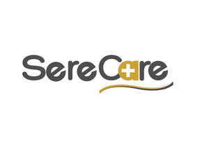

Trade Mark Journal No.2025/047 21 November 2025
UK00004292738 11 November 2025 (9,10)

- Class 9
- Software as a medical device [SaMD], downloadable; Respiratory apparatus, other than for medical use; Diagnostic ultrasound apparatus, other than for medical use; Radioisotope apparatus, other than for medical use; Thermal imaging apparatus [other than for medical use]; Electronic apparatus for testing the sterility of medical equipment; Thermographic apparatus, other than for medical use; Tomographic apparatus, other than for medical use; X-ray film imaging apparatus, other than for medical use; Monitoring apparatus, other than for medical purposes; Diagnostic apparatus, not for medical purposes; Sensors [measurement apparatus], other than for medical use; Physical analyzers [other than for medical use]; X-ray photographic apparatus, other than for medical use; Testing apparatus for diagnostic purposes [other than medical]; X-ray spectroscopy apparatus [other than for medical use]; Ultrasonic imaging apparatus, not for medical purposes; X-ray apparatus not for medical purposes; X-ray producing apparatus [other than for medical use].
- Class 10
- Medical devices; Medical apparatus and devices; Medical cutting devices; Medical diagnostic apparatus for medical purposes; Telemetry devices for medical applications; Medical imaging apparatus; Spirometers [medical apparatus]; Medical devices for moxibustion therapy; Medical radiation apparatus; Medical ultrasound apparatus; Cushioning devices for medical use; Electrodes for use with medical apparatus; Measuring devices for medical use; Diagnostic apparatus for medical purposes used in medical laboratories; Sensor apparatus for medical use in diagnosis; Medical X-ray apparatus; Electromagnetic medical apparatus; Telemetry apparatus for medical use; Medical analytical apparatus for medical purposes; Medical apparatus for use in endoscopy; Medical apparatus for use in cardiac surgery; Medical implants; Medical and veterinary apparatus and instruments; Medical electrodes; Apparatus for medical rehabilitation; Diagnostic ultrasound apparatus for medical use; Electronic apparatus for medical purposes; Medical apparatus for use in laparoscopy; Medical dosage dispensers for medical use; Magnetic treatment apparatus for medical use; Medical prostheses; Ultrasonic medical diagnostic apparatus; Medical apparatus for urological purposes; Medical guidewires; Guidewires (Medical -); Diagnostic imaging apparatus for medical use; Physiological apparatus for medical use; Electronic stimulator for medical use; Radiation oncology apparatus for medical use; Radioisotope apparatus for medical use; Ultrasonic apparatus for medical use in diagnosis; Apparatus for the application of laser radiation for medical purposes; Radiological apparatus for medical purposes; Diagnostic apparatus for medical purposes; Ultrasound apparatus for medical purposes; Suction apparatus for medical use; Medical catheters; Body warming devices for medical use; Medical apparatus and instruments; Surgical apparatus and instruments for medical use; X-ray apparatus for medical purposes; Medical apparatus for hyperhidrosis treatment; Tractions [medical apparatus]; Disposable medical devices for treating constipation; Medical endoscopes; Scanning apparatus for medical use; Medical devices for dosimetry purposes in the field of radiotherapy; Medical stethoscopes; Medical devices for closing wounds; Electronic endoscopes for medical use; Portable nebulisers for medical purposes; Diagnostic measuring apparatus for medical use; Medical stents; Pipetting apparatus for medical use; Physiological monitoring apparatus for medical use; Apparatus for medical cell sampling; Humidifying apparatus for medical use; Probes connected to microprocessing apparatus for medical diagnosis; Apparatus for physical training for medical use; Prostheses for medical treatment; Medical portable epilators; Endoscopic equipment for medical purposes; Medical lasers; Ultrasonic imaging apparatus for medical purposes; Massage apparatus [for medical purposes]; Medical syringes; Medical and surgical catheters; Nanorobots for medical purposes; Electrodes for medical use; Medical ventilators; Medical diagnostic instruments; Infrared apparatus for medical purposes; Electrodes for medical purposes; Traction apparatus for medical purposes; Water therapy apparatus for medical use; Medical devices for placing and securing catheters; Gas laser apparatus for medical treatment; Medical tubing; X-ray tomography apparatus for medical use; Chromatographic apparatus for medical use; Electronic analyzers for medical purposes; Enema apparatus for medical purposes; Apparatus for blood monitoring [for medical use]; Medical apparatus for urethral catheterization; Cryogenic apparatus for medical purposes; Injection device for pharmaceuticals; Rehabilitation apparatus (Body -) for medical purposes; Body rehabilitation apparatus for medical purposes; Protection devices against X-rays, for medical purposes; X-rays (Protection devices against -), for medical purposes; Testing apparatus for medical purposes; Medical diagnostic apparatus for testing for viruses; X-ray spectroscopy apparatus for medical use; Physiological measuring apparatus for medical use; Medical apparatus for the display of tomographic data; Nebulisers for medical purposes; Medical inhalers; Medical instruments; Medical apparatus for the treatment of respiratory conditions.
Serenity Global LTD